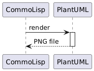

40ants-plantuml - Wrapper around PlantUML jar library
40ANTS-PLANTUML ASDF System Details
Description: Wrapper around Plant
UMLjar libraryLicence: Unlicense
Author: Alexander Artemenko <svetlyak.40wt@gmail.com>
Homepage: https://40ants.com/plantuml
Bug tracker: https://github.com/40ants/plantuml/issues
Source control: GIT
Depends on: alexandria, serapeum


Installation
You can install this library from Quicklisp, but you want to receive updates quickly, then install it from Ultralisp.org:
(ql-dist:install-dist "http://dist.ultralisp.org/"
:prompt nil)
(ql:quickload :40ants-plantuml)Usage
To make a diagram, first you need to download JAR file with
Java program PlantUML from official site https://plantuml.com/.
Then you'll have to set a path to this JAR file like this:
CL-USER> (setf 40ants-plantuml:*path-to-jar*
"~/plantuml-mit-1.2024.8.jar")
And of cause you will need some Java implementation suitable
for running this JAR file.
Here is how to render a sequence diagram to PNG file:
CL-USER> (40ants-plantuml:render "
@startuml
CommoLisp -> PlantUML : render
activate PlantUML
return PNG file
@enduml
"
#P"/tmp/diagram.png")
; No valuesIt will render an image like this:

API
40ANTS-PLANTUML
Functions
Variables
If given, should be a path to dot binary of Graphviz. Will be passed as -graphvizdot option to the PlantUML.
Set this variable to a path to the plantuml.jar. Note, there are different builds of plantuml with different licensing.
If this variable is NIL, then /usr/share/plantuml/plantuml.jar will be used if it is exists. On Ubuntu this file
is created when use do apt install plantuml. Note, the version of the PlantUML in the Ubuntu package could be outdated
and missing some important features.